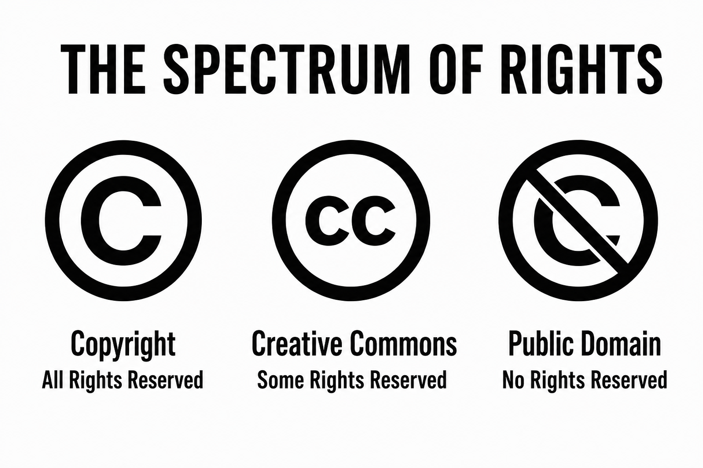
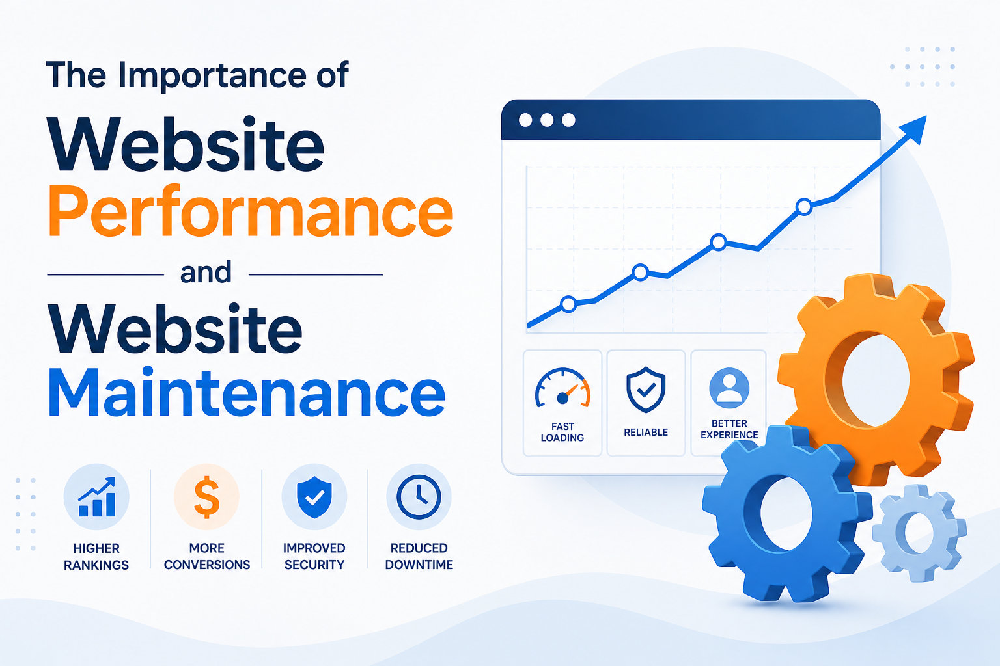

Click or tap a research card to flip it. Each back summarises the topic, lists practical points, and ends with an APA-style reference (the URL is clickable).
Copyright, Creative Common (CC) Licenses, Fair Use

Copyright, CC Licenses & Fair Use
Copyright is a legal right that lets a creator control copying, sharing and adapting of their work. On websites this includes text, photos, video, audio, logos and often source code.
Four Creative Commons licence types
- CC BY — reuse is allowed if the creator is credited.
- CC BY-SA — reuse is allowed with credit, and new work must use the same licence (share-alike).
- CC BY-NC — reuse is allowed with credit, but not for commercial use.
- CC BY-ND — reuse is allowed with credit, but the work must not be adapted (no derivatives).
Fair dealing in New Zealand
New Zealand does not use US “fair use”. The Copyright Act 1994 allows limited fair dealing for criticism, review, news reporting, research and private study. Copying a whole page or image “because it is for class” is not automatically lawful.
Creative Commons. (n.d.). About CC licenses. https://creativecommons.org/share-your-work/cclicenses/
Privacy & Web Privacy Policy
Privacy & Web Privacy Policy
A privacy policy tells visitors what personal data a site collects, why it is collected, how long it is stored, and who it is shared with. This portfolio has a short policy in the footer. New Zealand’s Privacy Act 2020 sets 13 information privacy principles.
13 information privacy principles
- Purpose of collection — collect only for a lawful, stated purpose.
- Source — collect from the person where practicable.
- Collection from the individual — tell them who you are and why you collect.
- Manner of collection — collect fairly and without unreasonable intrusion.
- Storage and security — protect the data from loss or misuse.
- Access — people can ask to see their information.
- Correction — people can ask for inaccurate data to be corrected.
- Accuracy — take reasonable steps to keep data accurate.
- Retention — do not keep personal data longer than needed.
- Limits on use — use it only for the purpose it was collected, unless an exception applies.
- Limits on disclosure — do not share it unless allowed.
- Unique identifiers — do not assign unique IDs unless necessary.
- Disclosure outside New Zealand — extra care before sending data overseas.
Office of the Privacy Commissioner. (n.d.). Information privacy principles. https://www.privacy.org.nz/privacy-act-2020/privacy-principles/
HOW TO IMPROVE YOUR WEBSITE SEO?
Factors you should know when choosing a right web hosting provider
Choosing a Web Hosting Provider
Web hosting stores website files on a server and makes them available on the internet.
Five factors to consider
- Uptime and reliability — how often the site stays online.
- Speed and server location — closer servers load faster for local users.
- HTTPS / SSL, storage and bandwidth included in the plan.
- Backups and support — can you restore the site, and is help available?
- Price and room to scale — can you upgrade later without rebuilding?
Cloudflare. (n.d.). What is web hosting? https://www.cloudflare.com/learning/cdn/glossary/web-hosting/
WEB PERFORMANCE AND MAINTENANCE

Web Performance and Maintenance
Five ways to reduce page loading time
- Compress and resize images before upload.
- Minify or remove unused CSS and JavaScript.
- Enable browser caching and, where possible, a CDN.
- Reduce the number of HTTP requests (fewer extra fonts and scripts).
- Measure Core Web Vitals and fix slow Largest Contentful Paint.
Five maintenance tasks
- Apply software and library updates.
- Take and test backups.
- Fix broken links, 404 pages and forms.
- Review content so it stays accurate.
- Check security (HTTPS, passwords, access) after each change.
Google. (n.d.). Learn web development. web.dev. https://web.dev/learn/
WEB SECURITY
Web Security
Five common attacks and how to prevent them
- Cross-site scripting (XSS) — escape or sanitise user input before it is shown on the page.
- SQL injection — use parameterised queries; never build SQL by joining strings from the form.
- Phishing / fake login pages — use HTTPS, a clear domain, and never ask for passwords by email.
- Brute-force login — strong passwords, account lockout or rate limits, and hashed passwords (never plain text).
- Broken access control — check on the server that a user may only read or change their own records.
OWASP Foundation. (n.d.). OWASP Top Ten. https://owasp.org/www-project-top-ten/